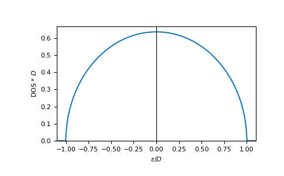

gftool.lattice.bethe.dos_mp¶
-
gftool.lattice.bethe.dos_mp(eps, half_bandwidth=1)[source]¶ Multi-precision DOS of non-interacting Bethe lattice for infinite coordination number.
This function is particularly suited to calculate integrals of the form \(∫dϵ DOS(ϵ)f(ϵ)\).
- Parameters
- epsmpmath.mpf or mpf_like
DOS is evaluated at points eps.
- half_bandwidthmpmath.mpf or mpf_like
Half-bandwidth of the DOS, DOS(| eps | > half_bandwidth) = 0. The half_bandwidth corresponds to the nearest neighbor hopping t=D/2
- Returns
- dos_mpmpmath.mpf
The value of the DOS.
See also
gftool.lattice.bethe.dosvectorized version suitable for array evaluations
References
- economou2006
Economou, E. N. Green’s Functions in Quantum Physics. Springer, 2006.
Examples
Calculate integrals:
>>> from mpmath import mp >>> mp.quad(gt.lattice.bethe.dos_mp, [-1, 1]) mpf('1.0')
>>> eps = np.linspace(-1.1, 1.1, num=500) >>> dos_mp = [gt.lattice.bethe.dos_mp(ee, half_bandwidth=1) for ee in eps] >>> dos_mp = np.array(dos_mp, dtype=np.float64)
>>> import matplotlib.pyplot as plt >>> _ = plt.plot(eps, dos_mp) >>> _ = plt.xlabel(r"$\epsilon/D$") >>> _ = plt.ylabel(r"DOS * $D$") >>> _ = plt.axvline(0, color='black', linewidth=0.8) >>> _ = plt.ylim(bottom=0) >>> _ = plt.xlim(left=eps.min(), right=eps.max()) >>> plt.show()

{kind=link}